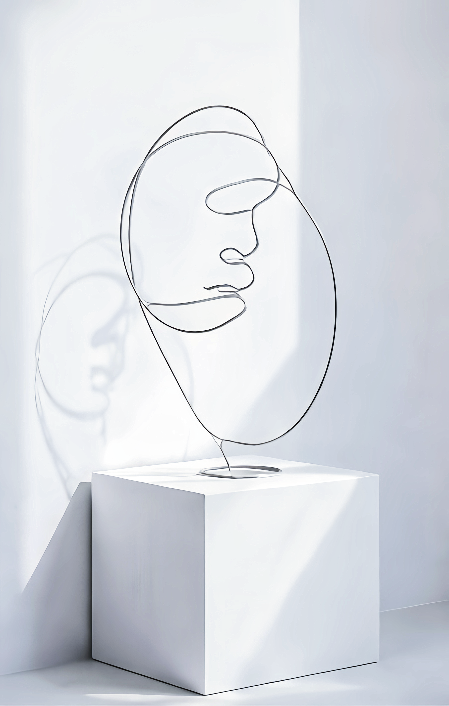
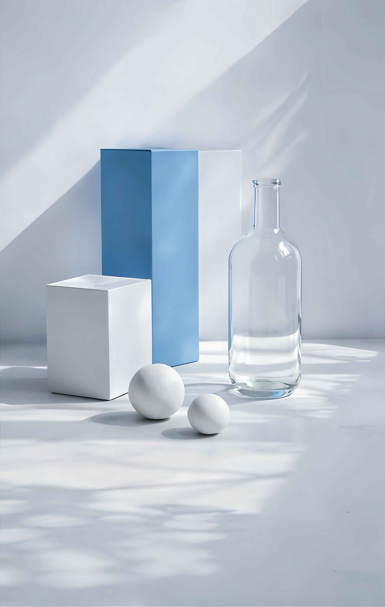
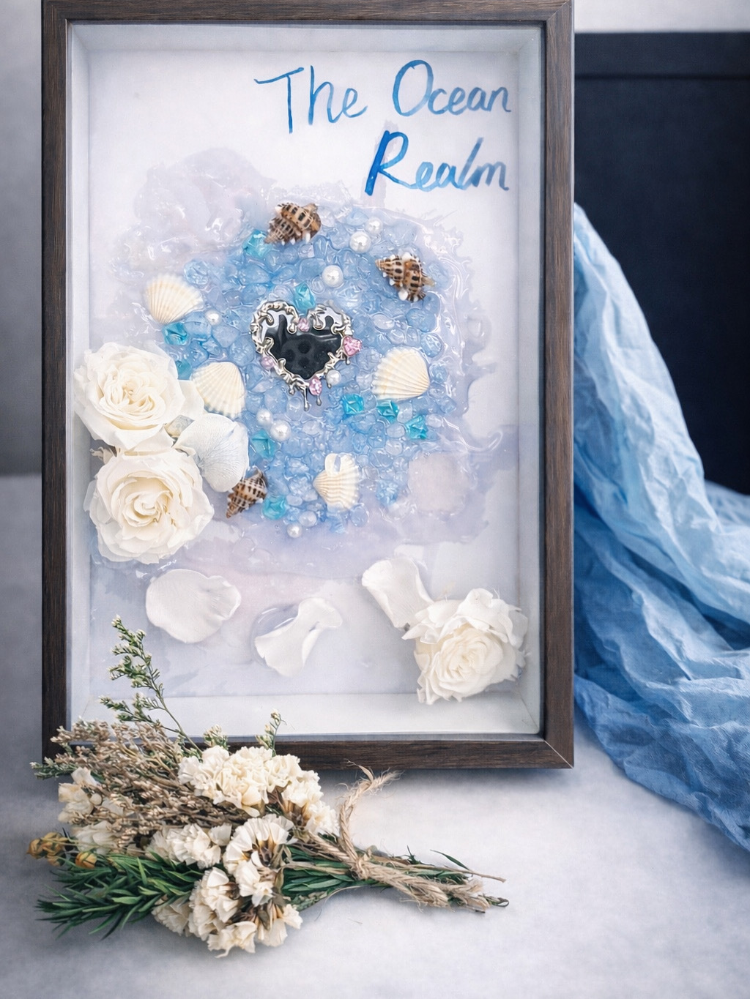

Line Portrait

Prologue of Light Blue

Quiet Composition

The Ocean Realm
Contemporary Visual Artist Portfolio



我是唐雨菲（Faye Tang），目前致力于当代视觉艺术的跨媒介探索。我的创作关注“寂静、记忆与情绪空间”，并通过极简视觉语言表达情绪层次。
我常使用克莱因蓝（Klein Blue）作为情绪表达的核心色彩，通过留白与光影关系，让作品在视觉上保持安静但富有力量。
“To capture the quiet moments that people usually overlook.”